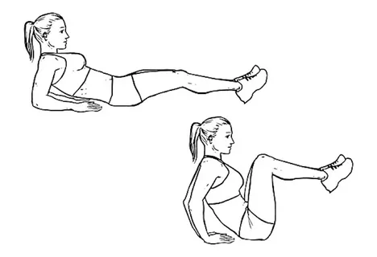
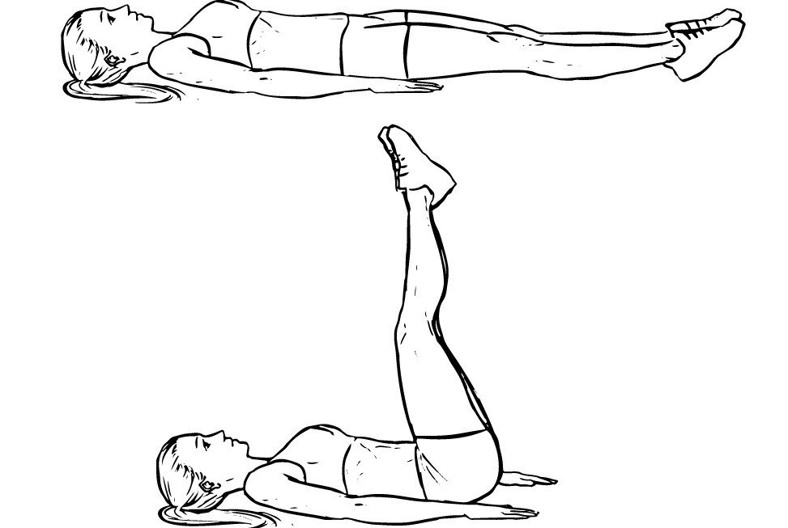
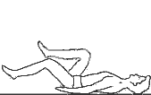
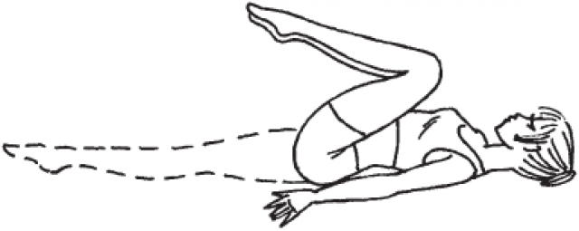

УПРАЖНЕНИЯ ДЛЯ ПРЕССА
Эта инструкция для тех, кто хочет накачать красивый пресс “кубиками” в домашних условиях… уделяя всего 10-20 минут в день.
Что нам понадобится:
1) Диван
2) Сила воли и желание
3) 10-20 минут времени
1 ШАГ.
Садимся на край дивана, руки упираем в диван и выпрямляем ноги перед собой (не касаясь пола) и начинаем сгибать ноги к себе и выпрямляем обратно и так 20 повторений.

2 ШАГ.
Ложимся на пол (на спину) , головой упираемся в диван, руками держимся за край дивана и начинаем поднимать ноги на 90 градусов к полу… это упражнение повторяем 20 раз.

3 ШАГ.
Не меняя положения, поднимаем ноги от пола и выполняем всем известное упражнение велосипед (ноги на весу и как будто крутим педали)… тоже 20 раз. Сделали? Можно и передохнуть, но недолго: минуту.

4 ШАГ.
Лежа все в том же положении продолжаем. Ноги согнуты в коленях, и пытаемся как бы достать до груди коленями, выполняя покачивающие движения, до груди и обратно на пол, 20 движений!

5 ШАГ.
Меняем положение. Ноги на диван, сами лежим на полу на спине. Руки вместе и достаем руками до колен и обратно. 20 раз.
6 ШАГ.
Ложимся в положение (ШАГ 5) на спину, ногу на диване, руки за головой и поочередно то влево то вправо делаем скручивающие движения, чтобы левая (правая) рука оказалась как можно ближе к правой (левой) ноге. 20 раз.
7 ШАГ.
После чего руки вместе перед собой, не меняя положение делаем тоже самое только теперь заводим руки то за правую, то за левую ногу, 20 раз.
8 ШАГ.
ВОТ собственно и все что требуется для получения пресса своей мечты.
ПОСЛЕСЛОВИЕ.
Поначалу 20 раз на каждое упражнение не для всех будет оптимально, то есть многовато, нужно начать с малого. В первый день сделайте 5-8, во второй - 10, в третий - 15, а дальше составляйте график исходя из своего самочувствия, так как у новичков, скорее всего, будет болеть пресс, отдохните день. Потом снова вперед по вашему индивидуальному графику! Обязательно чередуйте тренировки и отдых, чтобы был баланс.
{kind=link}
{kind=link}
{kind=link}
{kind=link}